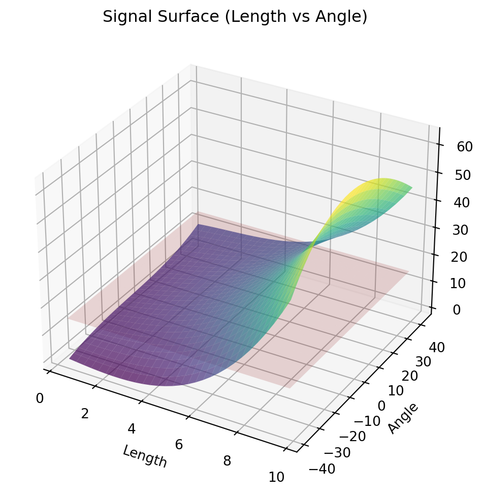
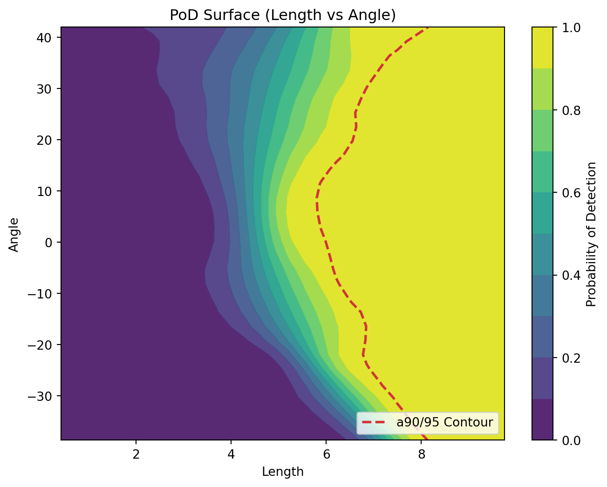
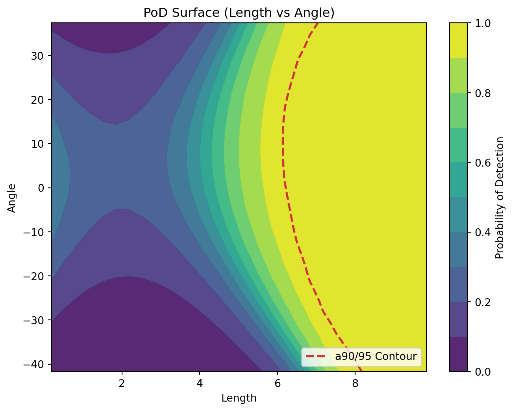

flowchart TD
A[1. Initialise - Generate LHS Design] --> B(2. Execute Solver)
B --> C{3. Diagnostics}
C -->|Healthy| D[(Final Validated Data)]
C -->|Fails Check| E[4. Refinement - Generate Targeted Samples]
E --> B
Automated Optimisation
The optimise method allows you to run a complete “Active Learning” loop. DigiQual will generate an initial design, run your external solver, check the results, and automatically add new points where the model is weak.
The Active Learning Lifecycle
When you trigger the optimise method, DigiQual acts as an orchestrator, completing the following active learning loop until statistical requirements are satisfied.
Breakdowns of the Steps
- Initialisation: If you have no existing data, DigiQual generates an initial batch of input coordinates using Latin Hypercube Sampling (LHS) to ensure a good spread across your variable ranges.
- Execution: It passes these coordinates to your solver and waits for the results.
- Diagnostics (Sense): Once the results are back, DigiQual runs statistical checks. It looks for “gaps” in your input coverage and measures “model uncertainty” using a technique called Bootstrap Query-by-Committee.
- Refinement (Decide & Act): If the diagnostics fail, DigiQual generates targeted new samples exactly where the model needs them most (e.g., in the middle of an empty gap, or in highly uncertain regions) and repeats the loop.
Connecting Your External Solver
To automate this process, DigiQual needs to communicate with your simulation model (whether that is a Python function, MATLAB script, or heavy FEA software like Ansys). It does this using the Executor pattern.
DigiQual provides three built-in Executors to bridge the gap:
PythonExecutor(In-Memory): Best for purely Python-based mathematical models or surrogate models. It runs entirely in memory for maximum speed.CLIExecutor(Process Isolation): Best for heavy physics engines (FEA/CFD) or heavy Python FEA scripts. It writes the inputs to a temporary CSV and spawns a completely isolated Operating System process to solve it. This guarantees that 100% of the solver’s memory is cleared after every run, preventing memory leaks.MatlabExecutor: A specialized wrapper that automatically handles the complex terminal syntax required to run MATLAB in a headless “batch” mode.
(See the Appendix for examples on connecting MATLAB and external software).
Handling Failures (Graveyard)
If your external solver crashes or fails to converge for a specific input row (e.g., a meshing error), your solver should return NaN or leave the outcome blank. DigiQual will automatically detect this and add those coordinates to a “graveyard”, ensuring the active learning loop navigates around that “dead zone” and never samples that exact region again!
The Auto-Pilot Workflow
Let’s walk through setting up a complete optimisation loop using a pure Python model.
1. Define a Solver and Executor
For this tutorial, we will write a standard Python function to simulate our physics. We will then wrap it in the PythonExecutor.
import numpy as np
from digiqual.executors import PythonExecutor
def mock_sensor_model(row):
"""A simulated physics model with noise."""
length = row["Length"]
angle = row["Angle"]
roughness = row["Roughness"]
# 1. THE DEAD ZONE (Trigger Graveyard Tracking)
if 4.0 < length < 6.0 and abs(angle) > 30:
return np.nan
# 2. BASE SIGNAL (Cubic Trend + Interaction + Attenuation)
# Roughness absorbs and scatters the signal, lowering the mean response.
base_signal = (
5.0
+ (5.0 * length)
- (0.8 * (length**2))
+ (0.1 * (length**3))
+ (angle * 0.1)
- (0.05 * length * abs(angle))
- (roughness * 5.0) # <--- Roughness penalty
)
# 3. HETEROSCEDASTIC, NON-NORMAL NOISE
# Roughness also makes the signal noisier and harder to read.
noise_scale = 0.5 + (length * 0.4) + (roughness * 1.0)
noise = np.random.gumbel(loc=0, scale=noise_scale)
noise -= noise_scale * 0.57721
signal = base_signal + noise
return signal
# Wrap our function in the Executor
executor = PythonExecutor(solver_func=mock_sensor_model, outcome_col="Signal")2. Configure the Study
We define our input variables and the ranges we want to explore.
from digiqual.core import SimulationStudy
# Define inputs ranges
ranges = {"Length": (0.0, 10.0), "Angle": (-45.0, 45.0), "Roughness": (0, 1)}
# Initialise
study = SimulationStudy(
input_cols=["Length", "Angle", "Roughness"], outcome_col="Signal"
)3. Run Optimisation
This single command handles the entire Active Learning loop:
study.optimise(
executor=executor,
ranges=ranges,
n_start=20, # Initial batch size
n_step=10, # Refinement batch size
max_iter=5, # Safety limit for the loops
max_hours=1.5, # Time limit to safely stop after 1.5 hours
)
========================================
STARTING ADAPTIVE OPTIMIZATION
========================================
--- Iteration 0: Generating Initial Design (20 points) ---
-> Executing Python model for 20 points...
--- Iteration 1: Diagnostics Check ---
>> Model invalid. Refining design...
Diagnostics flagged issues. Initiating Active Learning...
-> Active Graveyard Tracker: Protecting against 1 known bad regions.
-> Strategy: Exploitation (Targeting high uncertainty regions)
--- Running Batch 1 (10 points) ---
-> Executing Python model for 10 points...
--- Iteration 2: Diagnostics Check ---
>> Model invalid. Refining design...
Diagnostics flagged issues. Initiating Active Learning...
-> Active Graveyard Tracker: Protecting against 1 known bad regions.
-> Strategy: Exploitation (Targeting high uncertainty regions)
--- Running Batch 2 (10 points) ---
-> Executing Python model for 10 points...
--- Iteration 3: Diagnostics Check ---
>> Model invalid. Refining design...
Diagnostics flagged issues. Initiating Active Learning...
-> Active Graveyard Tracker: Protecting against 1 known bad regions.
-> Strategy: Exploitation (Targeting high uncertainty regions)
--- Running Batch 3 (10 points) ---
-> Executing Python model for 10 points...
--- Iteration 4: Diagnostics Check ---
>> Model invalid. Refining design...
Diagnostics flagged issues. Initiating Active Learning...
-> Active Graveyard Tracker: Protecting against 1 known bad regions.
-> Strategy: Exploitation (Targeting high uncertainty regions)
--- Running Batch 4 (10 points) ---
-> Executing Python model for 10 points...
--- Iteration 5: Diagnostics Check ---
>> Model invalid. Refining design...
Diagnostics flagged issues. Initiating Active Learning...
-> Active Graveyard Tracker: Protecting against 1 known bad regions.
-> Strategy: Exploitation (Targeting high uncertainty regions)
--- Running Batch 5 (10 points) ---
-> Executing Python model for 10 points...
----------------------------------------
>>> SEARCH COMPLETE <<<
Total Time: 0.01 minutes
Successful Runs: 69
Failed Runs: 1 (in graveyard)
Total Attempted: 70
----------------------------------------
Data updated. Total rows: 694. View Results
Once the loop finishes, study.data contains all the valid simulation results accumulated across all refinement iterations.
print(f"Total Simulations Run: {len(study.data)}")
# We can evaluate the PoD mapping out the Nuisance Angle!
_ = study.pod(
poi_col=["Length", "Angle"], nuisance_col="Roughness", threshold=15, n_jobs=-1
)
study.visualise()[Parallel(n_jobs=11)]: Using backend LokyBackend with 11 concurrent workers.
[Parallel(n_jobs=11)]: Done 19 tasks | elapsed: 3.1s
[Parallel(n_jobs=11)]: Done 140 tasks | elapsed: 12.2s
[Parallel(n_jobs=11)]: Done 343 tasks | elapsed: 27.5s
[Parallel(n_jobs=11)]: Done 626 tasks | elapsed: 49.0s
[Parallel(n_jobs=11)]: Done 1000 out of 1000 | elapsed: 1.3min finishedTotal Simulations Run: 69
Running validation...
Validation passed. 69 valid rows ready.
--- Starting Reliability Analysis (PoIs: ['Length', 'Angle']) ---
1. Selecting Mean Model (Cross-Validation)...
-> Selected Model: Polynomial (Degree 3)
2. Fitting Variance Model (Kernel Smoothing)...
-> Optimizing bandwidth via LOO-CV...
-> Smoothing Bandwidth: 8.5837
3. Inferring Error Distribution (AIC)...
-> Selected Distribution: laplace
4. Computing PoD Curve...
5. Running Bootstrap (1000 iterations on 11 cores)...--- Analysis Complete ---


Appendix: Real-World Wrapper Examples
When connecting DigiQual to external engines like MATLAB or Ansys, you will use the heavy-duty Executors.
Example A: Connecting to MATLAB
📥 Download MATLAB Executor Demo 📥 Download Dummy MATLAB Solver
The MatlabExecutor makes connecting to MATLAB effortless. You simply write a top-level MATLAB function that reads an input CSV, does the math, writes an output CSV, and exits.
A1. The MATLAB Solver (matlab_wrapper.m)
function matlab_wrapper(input_csv, output_csv)
df = readtable(input_csv);
num_rows = height(df);
signal_results = zeros(num_rows, 1);
for i = 1:num_rows
L = df.Length(i);
theta = df.Angle(i);
% Insert your complex MATLAB physics here
signal_results(i) = (L^3) * 0.5 + theta;
end
df.Signal = signal_results;
writetable(df, output_csv);
exit; % CRITICAL: Exit MATLAB to hand control back to DigiQual
endA2. The Digiqual Execution
You just provide the name of the MATLAB file. The Executor builds the headless terminal command automatically.
from digiqual.executors import MatlabExecutor
executor = MatlabExecutor(wrapper_name="matlab_wrapper")
study.optimise(executor=executor, ranges=ranges)Example B: Command Line Software (Ansys/Abaqus)
📥 Download CLI Executor Demo 📥 Download Dummy FEA Script
For software triggered via the command line, use the CLIExecutor. You must provide a command template containing {input} and {output} placeholders. DigiQual will write the design space to a temporary input CSV, spawn the terminal command, and read the resulting output CSV.
B1. The External Solver Script (run_ansys_simulation.py)
This script represents your standalone software. It must accept the input and output file paths as command-line arguments, read the input CSV, perform its calculations, and save the output CSV.
import sys
import pandas as pd
def run_simulation(input_csv, output_csv):
# 1. Read the input coordinates generated by DigiQual
df = pd.read_csv(input_csv)
signals = []
# 2. Run the solver for each row
for _, row in df.iterrows():
length = row["Length"]
angle = row["Angle"]
# Insert your complex FEA/external physics here
signal = (length**3) * 0.5 + angle
signals.append(signal)
# 3. Append the results and save
df["Signal"] = signals
df.to_csv(output_csv, index=False)
if __name__ == "__main__":
# sys.argv[1] is the {input} path, sys.argv[2] is the {output} path
run_simulation(sys.argv[1], sys.argv[2])B2. The DigiQual Execution
You define the exact terminal command needed to run the script above, and pass it to the CLIExecutor.
from digiqual.executors import CLIExecutor
# The exact command you would type into your terminal
cmd_template = "python run_ansys_simulation.py {input} {output}"
executor = CLIExecutor(command_template=cmd_template)
study.optimise(executor=executor, ranges=ranges)